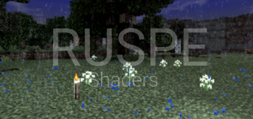

RUSPE Shaders
Latest version: 1.7.1

Do you want the luxury of ultra shaders without the expense of horrendous performance?
You found the right shaders
RUSPE Shaders focuses on realism and performance!
Unlike most other low end shaders, this does NOT have orange lightning, to me, I don't like orange lightning, they completely discolors builds and makes it have a hideous orange tint, thats not good for most cases, so I removed it. so that means if you light your builds, it will only light it, and it wont completely discolor your builds.
This doesn't work for Windows 10. Please stop commenting about it not working for Windows 10
These shaders are original, but I did use pio shaders as a template, but its still original.Features
- Realistic water
- Under Water effect(inspired from Edi's shaders)
- Realistic clouds
- Player Shadow
- Atmospheric sounds
- water waves
- Leaves waving
- Underwater distortion/waves
- block shadow
- Non orange lightning
- Realistic sun and moon
- Sun reflection/specular lighting(inspired from ESTN)
- Shader Settings
- Sun beams (Inspired from ESTN)
- beautiful sky
- Rain effect
- Rain mono effect
- Bump effect (turned off by default)
Screenshots:
1.7

1.6

1.5.1

1.5

1.4

1.3


1.2

1.1

1.0


Download:
RUSPE Shaders (1.7.1).mcpack
RUSPE Shaders (1.7.1).zip
RUSPE Shaders (1.7.1) [No atmospheric sounds].mcpack
RUSPE Shaders (1.7.1).zip
RUSPE Shaders (1.7.1) [No atmospheric sounds].mcpack
Older Versions
RUSPE Shaders (1.7).mcpack
RUSPE Shaders (1.6.1).mcpack
RUSPE Shaders (1.6).mcpack
RUSPE Shaders (1.5.2).mcpack
RUSPE Shaders (1.5.1).mcpack
RUSPE Shaders (1.5).mcpack
RUSPE Shaders (1.4.3).mcpack
RUSPE Shaders (1.4.2).mcpack
RUSPE Shaders (1.4.1).mcpack
RUSPE Shaders (1.4).mcpack
RUSPE Shaders (1.3).mcpack
RUSPE Shaders (1.2.1).mcpack
RUSPE Shaders (1.2).mcpack
RUSPE Shaders (1.0).mcpack
RUSPE Shaders (1.6.1).mcpack
RUSPE Shaders (1.6).mcpack
RUSPE Shaders (1.5.2).mcpack
RUSPE Shaders (1.5.1).mcpack
RUSPE Shaders (1.5).mcpack
RUSPE Shaders (1.4.3).mcpack
RUSPE Shaders (1.4.2).mcpack
RUSPE Shaders (1.4.1).mcpack
RUSPE Shaders (1.4).mcpack
RUSPE Shaders (1.3).mcpack
RUSPE Shaders (1.2.1).mcpack
RUSPE Shaders (1.2).mcpack
RUSPE Shaders (1.0).mcpack